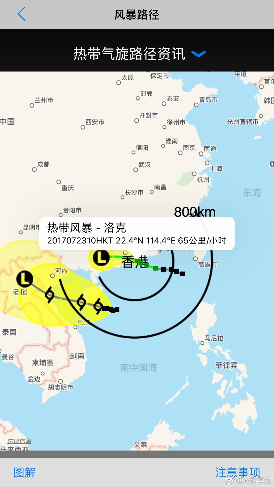
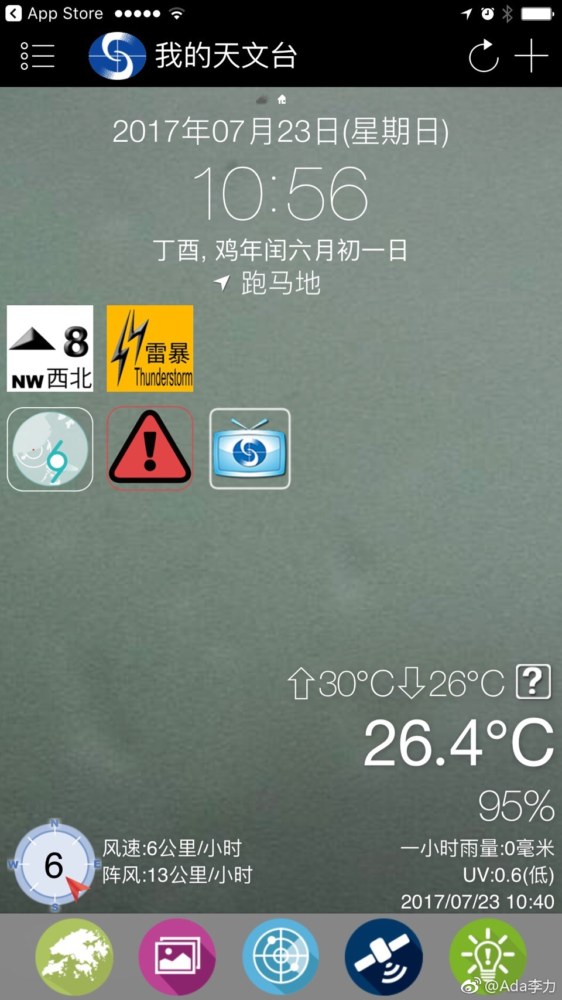
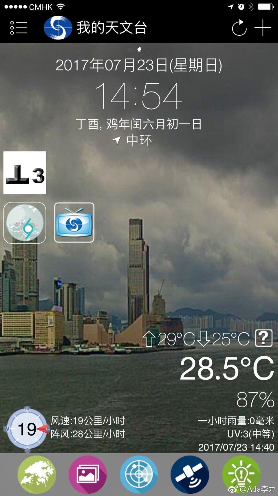
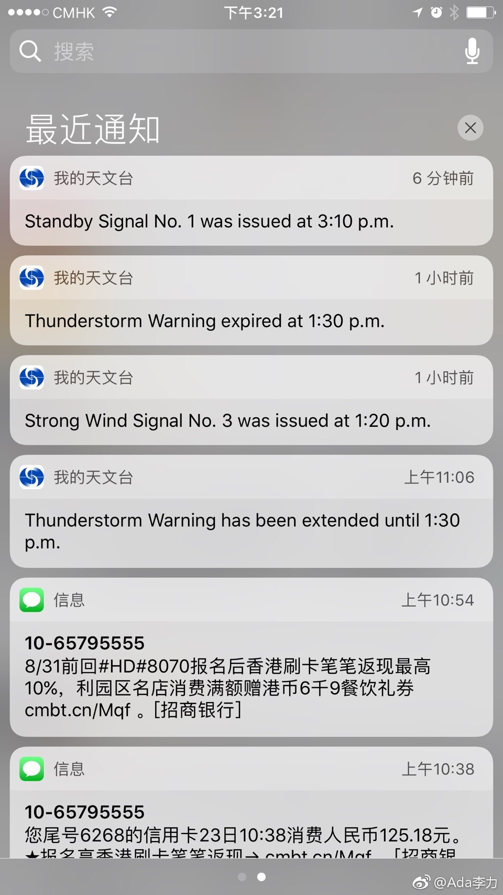

我是个很爱学习的人，但之前多年的学习并无清晰目标，充其量是把自己学成个让别人用起来特别趁手的工具。当工具也没啥，在社会职场这个大体系下，总得有分工。但当工具当出自豪感的话，那也只能承认用你的人更高明。讨厌忽悠别人，就是因为自己曾被忽悠过。
之前职场曾被冷处理过，老板对别人解释说：“Ada是杆大枪，要用在关键地方”。别人转述时认为老板是赏识和夸奖，我听出来的是讽刺。人，不是枪，也不是工具。@Ada李力:我是个很爱学习的人，但之前多年的学习并无清晰目标，充其量是把自己学成个让别人用起来特别趁手的工具。当工具也没啥，在社会职场这个大体系下，总得有分工。但当工具当出自豪感的话，那也只能承认用你的人更高明。讨厌忽悠别人，就是因为自己曾被忽悠过。
周六晚上来香港太平山顶有些失策，这个点（晚九点）回去，无论缆车，出租还是巴士，都得排队一个小时左右。队伍中一姑娘很气愤地说以后再也不来了，香港太落后，人流量这么大的地方连个咨询台都没有，她说苏州旅游服务都比香港好得多。我觉得旅游主要是看特色，尤其是别人比自己好的地方。太平山顶那么多人，排队都能绕建筑物一周，依然井然有序，也没人插队，国内还没有任何一个城市能做到这种精细管理的程度。我计划每年假期带姣姣出国游一趟，先去那些老牌的发达国家看看。
我对旅游兴趣不大，以前在外企时还接着出差机会顺路带她玩玩，但进了民企后压力大，创业时期忙，以至于#姣姣上小学后，我就没有带她出去旅游过，她的护照，港澳通行证有效期是五年，愣是过期都没有使用过。要检讨下。@Ada李力:周六晚上来香港太平山顶有些失策，这个点（晚九点）回去，无论缆车，出租还是巴士，都得排队一个小时左右。队伍中一姑娘很气愤地说以后再也不来了，香港太落后，人流量这么大的地方连个咨询台都没有，她说苏州旅游服务都比香港好得多。我觉得旅游主要是看特色，尤其是别人比自己好的地方。太平山顶那么多人，排队都能绕建筑物一周，依然井然有序，也没人插队，国内还没有任何一个城市能做到这种精细管理的程度。我计划每年假期带姣姣出国游一趟，先去那些老牌的发达国家看看。
这个来香港玩抓了“彩票”。周日，因为台风挂出8号风球，整个城市不上班不上学，交通停运。八号风球挂了四个小时，改成三号风球后，立刻出发，在香港中环转车时，看到路上人流已经熙熙攘攘。此地生活的人，已相当适应这类警报和警报解除。深圳起飞到北京的飞机，不出意外地晚点了，晚点三个小时。 深圳·深圳宝安国际机场
上一次来香港是六年前，这次来有两个地方改进相当大。1，港澳通行证改成身份证一样的大小，可以自助通关，跟刷地铁卡进站一样，方便很多。罗湖口岸没看到以前那种黑压压排队的情景，应该是通关速度加快的缘故。2，在香港也用百度地图导航，发现跟国内使用无二。手机实时监控巴士路线，比以前拿着地图仔细查看，努力听语音报站，盯着显示屏看站名的旅游状态，要轻松多了。微信支付宝在香港也能看到，做为大陆客，确实可以自豪下。